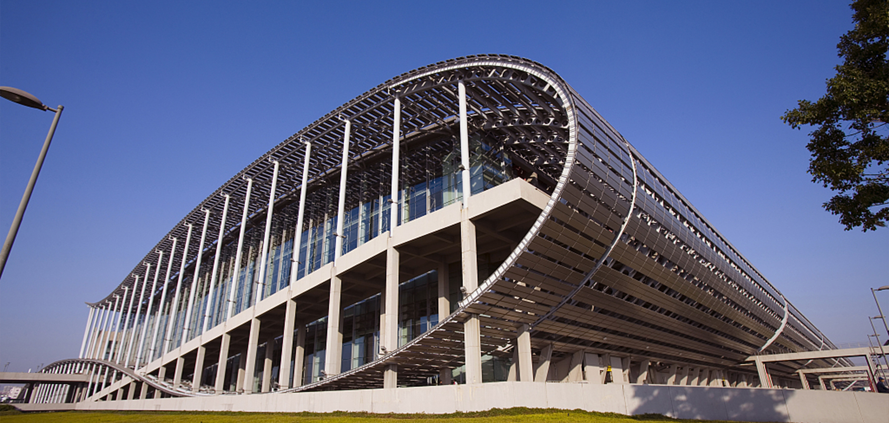
豪利建博会
展馆两个月，磨砺二十年
豪利并不只是给消费者一个漂亮的家居环境，质量上好的家居装修，更希望给他一个让人舍不得搬走的人文居住环境。定制服务需要真实把握消费者的思想需求及文化品位，并将其用家居硬件做呈现，因此更希望赋予这些硬件更深的文化内涵。豪利创造的是文化空间，整木艺术可以作为承载体，可以支持顾客把全世界最好的艺术品和放在家居中，为主人和朋友提供鉴赏和交流的艺术空间。这样的家居是可以让客户传承后代的，它不仅仅是居住地，更是一个家族的文化祖屋，更是高端圈层交流的思想空间。豪利的目标是做一家重视文化更甚于产品的艺术收藏级文化家居品牌，叫做“豪利，您的私人艺术馆”！
-
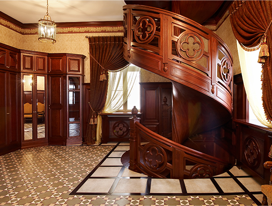2017广州建博会建筑装饰设计的人文主义回归！人生而高贵，对于：没有生命温度的低廉板材、混乱的搭配风格、以简陋为简单的设计、错漏百出的测量装修…
-
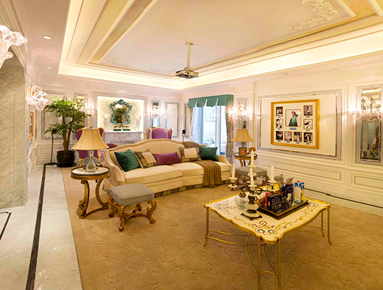2016广州建博会建筑装饰设计的人文主义回归！人生而高贵，对于：没有生命温度的低廉板材、混乱的搭配风格、以简陋为简单的设计、错漏百出的测量装修…
-
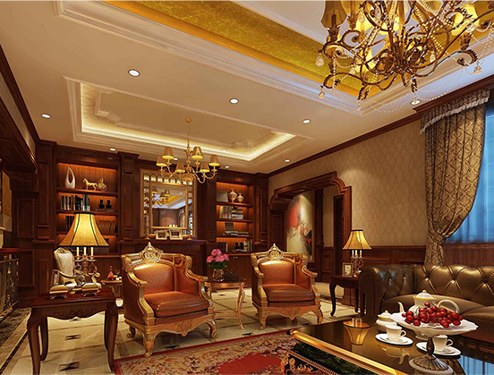2015广州建博会建筑装饰设计的人文主义回归！人生而高贵，对于：没有生命温度的低廉板材、混乱的搭配风格、以简陋为简单的设计、错漏百出的测量装修…
-
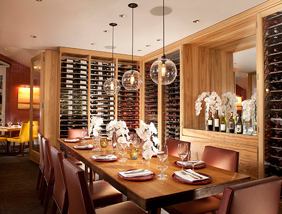2014广州建博会建筑装饰设计的人文主义回归！人生而高贵，对于：没有生命温度的低廉板材、混乱的搭配风格、以简陋为简单的设计、错漏百出的测量装修…
-
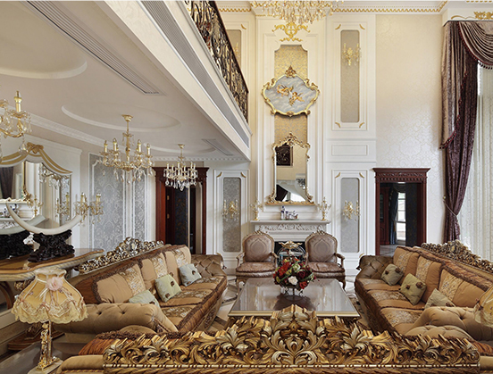2013广州建博会建筑装饰设计的人文主义回归！人生而高贵，对于：没有生命温度的低廉板材、混乱的搭配风格、以简陋为简单的设计、错漏百出的测量装修…
-
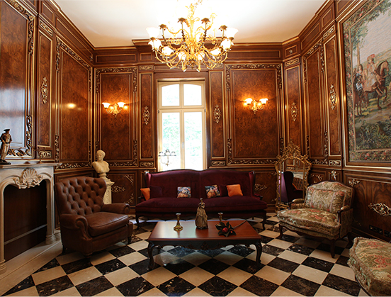2012广州建博会建筑装饰设计的人文主义回归！人生而高贵，对于：没有生命温度的低廉板材、混乱的搭配风格、以简陋为简单的设计、错漏百出的测量装修…
-
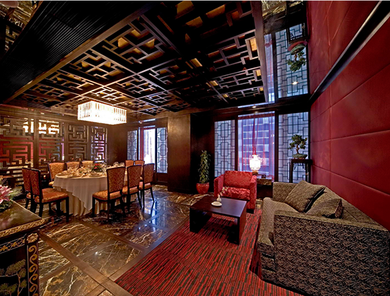2011广州建博会建筑装饰设计的人文主义回归！人生而高贵，对于：没有生命温度的低廉板材、混乱的搭配风格、以简陋为简单的设计、错漏百出的测量装修…
-
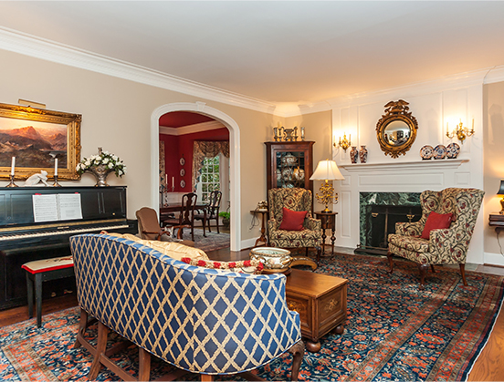2010广州建博会建筑装饰设计的人文主义回归！人生而高贵，对于：没有生命温度的低廉板材、混乱的搭配风格、以简陋为简单的设计、错漏百出的测量装修…
-
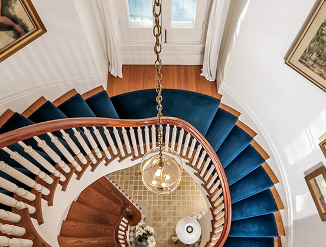2009广州建博会建筑装饰设计的人文主义回归！人生而高贵，对于：没有生命温度的低廉板材、混乱的搭配风格、以简陋为简单的设计、错漏百出的测量装修…
-
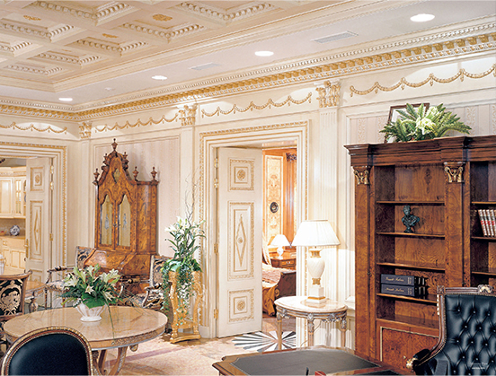2008广州建博会建筑装饰设计的人文主义回归！人生而高贵，对于：没有生命温度的低廉板材、混乱的搭配风格、以简陋为简单的设计、错漏百出的测量装修…
-
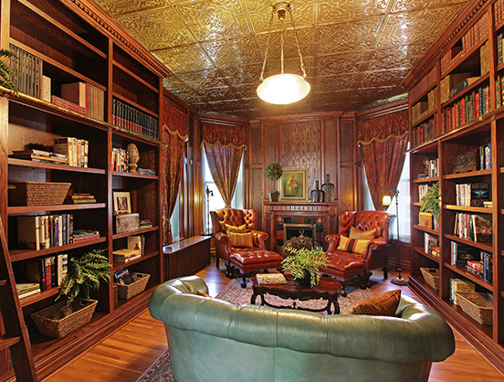2007广州建博会建筑装饰设计的人文主义回归！人生而高贵，对于：没有生命温度的低廉板材、混乱的搭配风格、以简陋为简单的设计、错漏百出的测量装修…